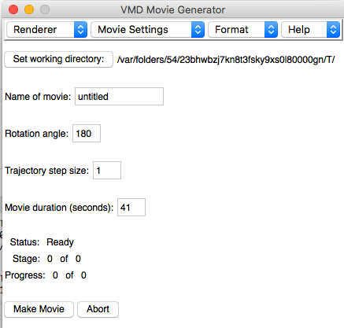

oakbridgeにファイルシステムを接続
sshfs oakbridge:サーバーのディレクトリ クライアントのディレクトリ
gromacsのロード
module load gromacs/2020.4
水分子でチュートリアル
以下の方法に従って行った
https://www.hpc.co.jp/tech-blog/2020/04/14/gromacs-tutorial-watermd-intro/
oakbridgeで実行するときはgmxではcommand not foundとなるのでgmx_mpiに置き換えて実行する。
nvtのmd実行速度
cpu: Intel® Xeon Platinum 8280 2.7GHz
Core t (s) Wall t (s) (%)
Time: 1109.971 19.821 5599.9
(ns/day) (hour/ns)
Performance: 217.952 0.110
samplingのmd実行速度
Core t (s) Wall t (s) (%)
Time: 2838.425 50.686 5600.0
(ns/day) (hour/ns)
Performance: 170.462 0.141
VMDのインストール
homebrewになかったのでcondaで入れようと思ったがlinuxのみ対応だった
ので
https://www.ks.uiuc.edu/Development/Download/download.cgi?PackageName=VMD
からインストール
high sierra(10.13)でも
MacOS 10.15, x86_64 (64-bit Intel x86_64) (Apple MacOS-X 10.15 or later)
が動いた。
VMD での.mp4動画作成
出来あがる動画はこんな感じ
https://youtu.be/8AkwZiUOs3c
ウインドウサイズに即した大きさのmp4スタック動画ができるのでウインドウサイズに注意。
初期座標とtrackdataをを読み込んだVMDで
Extensions -> Visualization -> Movie Maker
を選択、

Formatタブ -> JPEG frames (ImageMagick)
を選択後
Make Movie
ボタンを押すと
/var/folders/54/23bhwbzj7kn8t3fsky9xs0l80000gn/T/
に
final.*.jpg
という画像ができた。。
bashで以下のコマンドを打ちjpgからmp4を生成
convert -delay 6 -quality 95 /var/folders/54/23bhwbzj7kn8t3fsky9xs0l80000gn/T/final*jpg movie.mp4
しようと思ったがエラー
convert: delegate failed `'ffmpeg' -nostdin -v -1 -i '%M%%d.pam' -plays %I '%u.%m' 2> '%u'' @ error/delegate.c/InvokeDelegate/1898
が出てできない。ググると ffmpegをインストールしてimagemagicを再インストールする必要があるということ。
https://serverfault.com/questions/748703/converting-jpg-to-mpg-fails-in-convert-imagemagick
brew uninstall imagemagick
brew install ffmpeg
brew install imagemagick
その後、
convert -delay 6 -quality 95 /var/folders/54/23bhwbzj7kn8t3fsky9xs0l80000gn/T/final*jpg movie.mp4
で作成
ソース:
https://amberhub.chpc.utah.edu/making-movies/